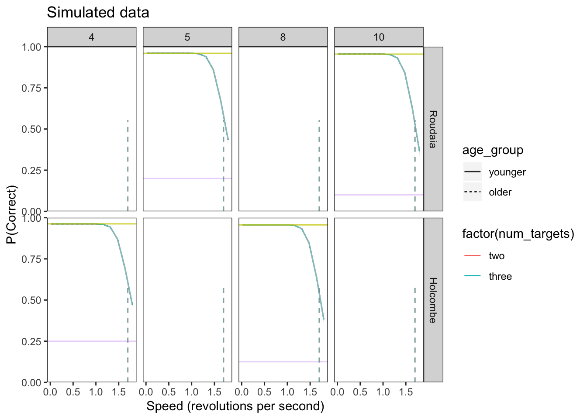
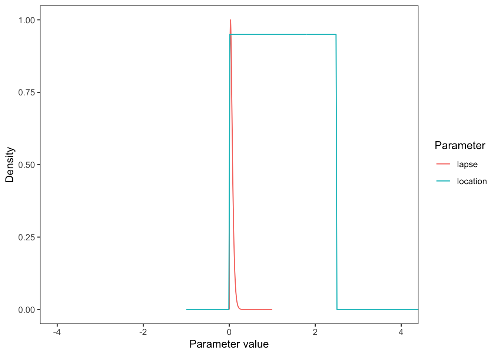
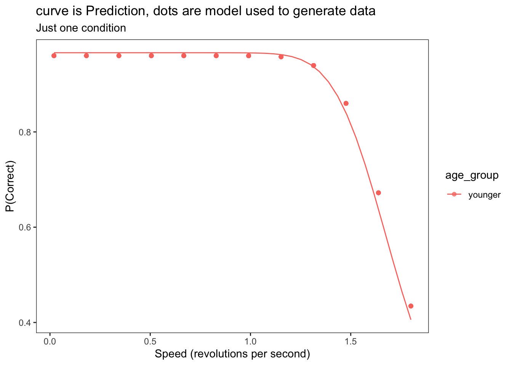

rm(list = ls())
library(here) #To find path of home directory of repo
library(tidyverse)
library(brms)
source( here("R","simulate_data.R") ) #Load my needed custom function
source( here("R","psychometric_function.R") ) #Load my needed custom function
set.seed(998) #ensures reproducibility for testing
break_brms_by_making_num_targets_numeric<- FALSE #Change factor to numeric, right before doing formula fit, so
#I know that it's brms that's the problem rather than the rest of my codeNo consistent bias?
Generate fake data that includes differences between participants, but doesn’t model them.
To get started, we load the required packages.
Create simulated trials
Set up simulated experiment design.
num_targetsConds<- factor( c("two", "three"),
levels=c("two", "three") ) #This defines the factor order
numSubjects<- 25
trialsPerCondition<- 30#8
laboratories<- factor( c("Roudaia", "Holcombe"),
levels=c("Roudaia", "Holcombe") ) #This defines the factor order
#Array of speeds (not very realistic because mostly controlled by a staircase in actual experiment)
speeds<-seq(.02,1.8, length.out = 12) # trials at 12 different speeds between .02 and 1.8Determine what subset of data brms will model, to test what breaks logSigma estimation.
example_condition <- data.frame(
lab = "Roudaia", #first level
age_group = "younger", #first level
gender = "M", #first level
num_targets = "two", #first level
obj_per_ring = 5, #first level? confusing because mixed effect
chance_rate = 1/5,
subj_standardzd = 0
)In order to build and test our model in brms, we must first create a simulated data set that is similar to our actual experiment data. This allows us to confirm the brms model is working and successfully recovers the parameters we set before applying it to our real experimental data that has unknown parameter values. In the actual data, there will be many group-wise differences in location and scale parameters. The following simulated data only has explicit differences between the \(\eta\) (location) of the two age groups (older vs younger).
# A tibble: 8 × 2
name value
<chr> <int>
1 lab 2
2 gender 2
3 age_group 2
4 subjWithinGroup 25
5 num_targets 2
6 obj_per_ring 4
7 speed 12
8 trialThisCond 30Create between-subject variability within each group, to create a potential multilevel modeling advantage. Can do this by passing the participant number to the location-parameter calculating function. Because that function will be called over and over, separately, the location parameter needs to be a deterministic function of the participant number. So it needs to calculate a hash or something to determine the location parameter. E.g. it could calculate the remainder, but then the location parameters wouldn’t be centered on the intended value for that condition. To do that, I think I need to know the number of participants in the condition, n, and number them 1..n. Then I can give e.g. participant 1 the extreme value on one side of the condition-determined value and give participant n the extreme value on the other side. So I number participants separately even within age*gender to maintain the age and gender penalties, but not within speed, of course. Also not within targetLoad or obj_per_ring.
Because the present purpose of numbering participants is to inject the right amount of between-participant variability, I will number the participants with a range of numbers that has unit standard deviation. Will call this column “subjStandardized”.
Choose values for psychometric function for all conditions and groups
lapse <- 0.05
sigma <- 0.2
location_param_base<-1.7 #1.1 #location_param_young_123targets <- c(1.7,1.0,0.8)
target_penalty<-0#0.9 #penalty for additional target
age_penalty <- 0#0.2#0.4 #Old people have worse limit by this much
gender_penalty <- 0#0.09 #Female worse by this much
Holcombe_lab_penalty <- 0#0.07#0.2
#Set parameters for differences between Ss in a group
eta_between_subject_sd <- .01#0.2
#Using above parameters, need function to calculate a participant's location parameter
#Include optional between_subject_variance
location_param_calculate<- function(num_targets,age_group,gender,lab,
subjStandardized,eta_between_subject_sd) {
base_location_param <- location_param_base#location_param_young_123targets[targetLoad]
#calculate offset for this participant based on desired sigma_between_participant_variance
location_param <- base_location_param +
subjStandardized * eta_between_subject_sd
after_penalties <-location_param -
if_else(lab=="Holcombe",1,0) * Holcombe_lab_penalty -
if_else(age_group=="older",1,0) * age_penalty -
if_else(num_targets=="three",1,0) * target_penalty -
if_else(gender=="F",1,0) * gender_penalty
return (after_penalties)
}
#Need version with fixed eta_between_subject_sd for use in mutate
location_param_calc_for_mutate<- function(num_targets,age_group,gender,lab,
subjStandardized) {
location_param_calculate(num_targets,age_group,gender,lab,
subjStandardized, eta_between_subject_sd)
}Using the psychometric function, simulate whether participant is correct on each trial or not, and add that to the simulated data.
Plot data
upper_bound = 1 - L*(1-C)

Setting up our Model in brms
Setting a model formula in brms allows the use of multilevel models, where there is a hierarchical structure in the data. But at this point we haven’t made the model multi-level as we have been concentrating on the basics of brms.
The bf() function of brms allows the specification of a formula. The parameter can be defined by population effects, where the parameter’s effect is fixed, or group level effects where the parameter varies with a variable such as age. The “family” argument is a description of the response distribution and link function that the model uses. For more detailed information on setting up a formula and the different arguments in BRMS seehttps://paulbuerkner.com/brms/reference/brmsformula.html
The model we used is based off our psychometric function used to generate the data mentioned previously. The only explicitly-coded difference in our simulated data is in the location parameter of older vs younger. Thus, in addition to the psychometric function, we allowed \(\eta\) and \(\log(\sigma)\) to vary by age group in the model. Because the psychometric function doesn’t map onto a canonical link function, we use the non-linear estimation capability of brms rather than linear regression with a link function.
Alex’s note: Using the nonlinear option is also what allowed us to set a prior on the thresholds \(\eta\), because we could then parametrize the function in terms of the x-intercept, whereas with the link-function approach, we are stuck with the conventional parameterization of a line, which has a term for the y-intercept but not the x-intercept
This example
For this minimal example, don’t model any factors and only use the data of conditions specified by example_condition
#Minimal example for eta, so don't model sigma, supply it in the data
data_simulated$logSigma<- log(sigma)
my_formula <- brms::bf(
correct ~ chance_rate + (1-chance_rate - lapseRate*(1-chance_rate)) * Phi(-(speed-eta)/exp(logSigma))
)
my_formula <- my_formula$formula
my_brms_formula <- brms::bf(
correct ~ chance_rate + (1-chance_rate - lapseRate * (1-chance_rate))*Phi(-(speed-eta)/exp(logSigma)),
eta ~ 1, #lab + age_group + num_targets + gender,
lapseRate ~ 1, #~1 estimates intercept only
#logSigma ~ 1,#age_group,
family = bernoulli(link="identity"), #Otherwise the default link 'logit' would be applied
nl = TRUE #non-linear model
)Set priors
See visualize_and_select_priors.html for motivation.
Visualize priors, by plotting them all together (with arbitrary height).

Fitting Model to Simulated Data
Fitting the model gives an estimation of the average parameter value of the participants. The brm() function is used to fit the model based on the given formula, data and priors. Other arguments of brm can adjust the model fitting in various ways, for more information on each of the arguments see https://paulbuerkner.com/brms/reference/brm.html
if (break_brms_by_making_num_targets_numeric) {
#Make numeric version of num_targets
data_simulated <- data_simulated |>
mutate(targets = case_when(
num_targets == "two" ~ 2,
num_targets == "three" ~ 3,
TRUE ~ 0
))
#Delete old column
data_simulated$num_targets <- NULL #delete column
data_simulated <- data_simulated %>%
rename(num_targets = targets)
}Compiling Stan program...Trying to compile a simple C fileRunning /Library/Frameworks/R.framework/Resources/bin/R CMD SHLIB foo.c
using C compiler: ‘Apple clang version 16.0.0 (clang-1600.0.26.6)’
using SDK: ‘’
clang -arch arm64 -I"/Library/Frameworks/R.framework/Resources/include" -DNDEBUG -I"/Library/Frameworks/R.framework/Versions/4.5-arm64/Resources/library/Rcpp/include/" -I"/Library/Frameworks/R.framework/Versions/4.5-arm64/Resources/library/RcppEigen/include/" -I"/Library/Frameworks/R.framework/Versions/4.5-arm64/Resources/library/RcppEigen/include/unsupported" -I"/Library/Frameworks/R.framework/Versions/4.5-arm64/Resources/library/BH/include" -I"/Library/Frameworks/R.framework/Versions/4.5-arm64/Resources/library/StanHeaders/include/src/" -I"/Library/Frameworks/R.framework/Versions/4.5-arm64/Resources/library/StanHeaders/include/" -I"/Library/Frameworks/R.framework/Versions/4.5-arm64/Resources/library/RcppParallel/include/" -I"/Library/Frameworks/R.framework/Versions/4.5-arm64/Resources/library/rstan/include" -DEIGEN_NO_DEBUG -DBOOST_DISABLE_ASSERTS -DBOOST_PENDING_INTEGER_LOG2_HPP -DSTAN_THREADS -DUSE_STANC3 -DSTRICT_R_HEADERS -DBOOST_PHOENIX_NO_VARIADIC_EXPRESSION -D_HAS_AUTO_PTR_ETC=0 -include '/Library/Frameworks/R.framework/Versions/4.5-arm64/Resources/library/StanHeaders/include/stan/math/prim/fun/Eigen.hpp' -D_REENTRANT -DRCPP_PARALLEL_USE_TBB=1 -I/opt/R/arm64/include -fPIC -falign-functions=64 -Wall -g -O2 -c foo.c -o foo.o
In file included from <built-in>:1:
In file included from /Library/Frameworks/R.framework/Versions/4.5-arm64/Resources/library/StanHeaders/include/stan/math/prim/fun/Eigen.hpp:22:
In file included from /Library/Frameworks/R.framework/Versions/4.5-arm64/Resources/library/RcppEigen/include/Eigen/Dense:1:
In file included from /Library/Frameworks/R.framework/Versions/4.5-arm64/Resources/library/RcppEigen/include/Eigen/Core:19:
/Library/Frameworks/R.framework/Versions/4.5-arm64/Resources/library/RcppEigen/include/Eigen/src/Core/util/Macros.h:679:10: fatal error: 'cmath' file not found
679 | #include <cmath>
| ^~~~~~~
1 error generated.
make: *** [foo.o] Error 1Start samplingTime taken (min) = 0.4non_model' NOW (CHAIN 4).
Chain 3: Iteration: 1 / 1500 [ 0%] (Warmup)
Chain 4:
Chain 4: Gradient evaluation took 7.4e-05 seconds
Chain 4: 1000 transitions using 10 leapfrog steps per transition would take 0.74 seconds.
Chain 4: Adjust your expectations accordingly!
Chain 4:
Chain 4:
Chain 4: Iteration: 1 / 1500 [ 0%] (Warmup)
Chain 3: Iteration: 150 / 1500 [ 10%] (Warmup)
Chain 1: Iteration: 150 / 1500 [ 10%] (Warmup)
Chain 4: Iteration: 150 / 1500 [ 10%] (Warmup)
Chain 2: Iteration: 150 / 1500 [ 10%] (Warmup)
Chain 3: Iteration: 300 / 1500 [ 20%] (Warmup)
Chain 1: Iteration: 300 / 1500 [ 20%] (Warmup)
Chain 2: Iteration: 300 / 1500 [ 20%] (Warmup)
Chain 4: Iteration: 300 / 1500 [ 20%] (Warmup)
Chain 3: Iteration: 450 / 1500 [ 30%] (Warmup)
Chain 1: Iteration: 450 / 1500 [ 30%] (Warmup)
Chain 2: Iteration: 450 / 1500 [ 30%] (Warmup)
Chain 4: Iteration: 450 / 1500 [ 30%] (Warmup)
Chain 3: Iteration: 600 / 1500 [ 40%] (Warmup)
Chain 2: Iteration: 600 / 1500 [ 40%] (Warmup)
Chain 1: Iteration: 600 / 1500 [ 40%] (Warmup)
Chain 4: Iteration: 600 / 1500 [ 40%] (Warmup)
Chain 3: Iteration: 750 / 1500 [ 50%] (Warmup)
Chain 3: Iteration: 751 / 1500 [ 50%] (Sampling)
Chain 4: Iteration: 750 / 1500 [ 50%] (Warmup)
Chain 4: Iteration: 751 / 1500 [ 50%] (Sampling)
Chain 2: Iteration: 750 / 1500 [ 50%] (Warmup)
Chain 2: Iteration: 751 / 1500 [ 50%] (Sampling)
Chain 1: Iteration: 750 / 1500 [ 50%] (Warmup)
Chain 1: Iteration: 751 / 1500 [ 50%] (Sampling)
Chain 4: Iteration: 900 / 1500 [ 60%] (Sampling)
Chain 2: Iteration: 900 / 1500 [ 60%] (Sampling)
Chain 3: Iteration: 900 / 1500 [ 60%] (Sampling)
Chain 1: Iteration: 900 / 1500 [ 60%] (Sampling)
Chain 2: Iteration: 1050 / 1500 [ 70%] (Sampling)
Chain 4: Iteration: 1050 / 1500 [ 70%] (Sampling)
Chain 3: Iteration: 1050 / 1500 [ 70%] (Sampling)
Chain 1: Iteration: 1050 / 1500 [ 70%] (Sampling)
Chain 2: Iteration: 1200 / 1500 [ 80%] (Sampling)
Chain 4: Iteration: 1200 / 1500 [ 80%] (Sampling)
Chain 3: Iteration: 1200 / 1500 [ 80%] (Sampling)
Chain 2: Iteration: 1350 / 1500 [ 90%] (Sampling)
Chain 1: Iteration: 1200 / 1500 [ 80%] (Sampling)
Chain 4: Iteration: 1350 / 1500 [ 90%] (Sampling)
Chain 2: Iteration: 1500 / 1500 [100%] (Sampling)
Chain 2:
Chain 2: Elapsed Time: 0.174 seconds (Warm-up)
Chain 2: 0.128 seconds (Sampling)
Chain 2: 0.302 seconds (Total)
Chain 2:
Chain 4: Iteration: 1500 / 1500 [100%] (Sampling)
Chain 4:
Chain 4: Elapsed Time: 0.173 seconds (Warm-up)
Chain 4: 0.132 seconds (Sampling)
Chain 4: 0.305 seconds (Total)
Chain 4:
Chain 3: Iteration: 1350 / 1500 [ 90%] (Sampling)
Chain 1: Iteration: 1350 / 1500 [ 90%] (Sampling)
Chain 3: Iteration: 1500 / 1500 [100%] (Sampling)
Chain 3:
Chain 3: Elapsed Time: 0.172 seconds (Warm-up)
Chain 3: 0.171 seconds (Sampling)
Chain 3: 0.343 seconds (Total)
Chain 3:
Chain 1: Iteration: 1500 / 1500 [100%] (Sampling)
Chain 1:
Chain 1: Elapsed Time: 0.176 seconds (Warm-up)
Chain 1: 0.176 seconds (Sampling)
Chain 1: 0.352 seconds (Total)
Chain 1: The logSigma estimate tends to have wide confidence intervals, and be biased high?
Check how close the fit estimates are to the true parameters.
Report on eta_Intercept.
[1] "Success. Looks like I/brms calculated/estimated the eta_Intercept correctly, within 0.1."Warning in tidy.brmsfit(fit): some parameter names contain underscores: term
naming may be unreliable!# A tibble: 2 × 8
effect component group term estimate std.error conf.low conf.high
<chr> <chr> <lgl> <chr> <dbl> <dbl> <dbl> <dbl>
1 fixed cond NA eta_(Intercept) 1.67 0.0355 1.61 1.75
2 fixed cond NA lapseRate_(Inter… 0.0423 0.0127 0.0214 0.0708Plot the predictions of the brms fit
